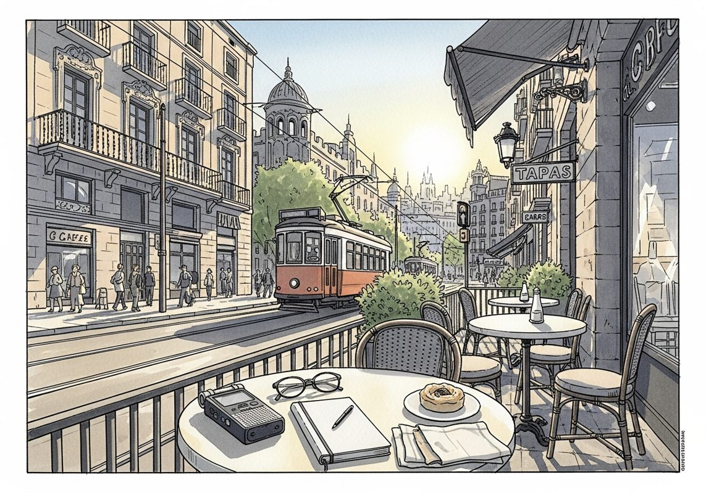

7/26

播客简报 2026-07-26
今日更新
#426 How Obsession Built Christopher Nolan
来源：Founders
原链接：
状态：已读完整音频 transcript
这期播客深入剖析了电影大师克里斯托弗·诺兰（Christopher Nolan）的成功之道，揭示了他如何凭借极致的执念、严苛的自律、对模拟世界的坚守以及独特的创作哲学，从微预算短片走向数十亿美元的票房巨制。本期内容不仅适合电影爱好者，更对所有追求卓越、希望在各自领域实现深度创作和掌控力的创业者、创作者和专业人士具有深刻的启发意义。
- 执念的开端：《记忆碎片》的诞生与突破：克里斯托弗·诺兰的电影生涯始于一段艰难的时期。他耗费一年时间为《记忆碎片》（Memento）寻找发行商，却屡遭拒绝，尽管影片质量备受认可，但其非线性叙事和独特风格让发行商望而却步。对诺兰而言，这部电影是他内心执念的产物，必须被拍出来。他形容自己完全沉浸其中，无法自拔，只能全然信任最初的直觉。两年后，这部电影在威尼斯电影节首映，起初的几秒寂静让他心生恐惧，但随之而来的是雷鸣般的掌声。最终，《记忆碎片》获得两项奥斯卡提名，票房大获成功，标志着诺兰职业生涯的垂直上升。在短短二十年间，他从制作微预算短片发展到执导数十亿美元的商业大片，其作品全球票房累计超过50亿美元，成为少数能带着原创剧本从制片厂获得2亿美元预算的导演之一，如同斯皮尔伯格和乔治·卢卡斯一样，他本身就代表着一个品牌。
- 模拟世界的坚守与极简主义创作哲学：诺兰以其对“模拟世界”的坚守而闻名。他没有电子邮件账户，只使用翻盖手机，与人沟通需通过助理安排实体会面。他认为技术应服务于人类，而非反之，这与本田创始人本田宗一郎的理念不谋而合。诺兰将自己视为“匠人”而非“艺术家”，这与乔治·卢卡斯的自我认知异曲同工。他认为，既然要投入有限的生命能量，作品就必须是最好的。他享受亲力亲为，所有电影的剧本都由他亲自撰写或参与创作。他偏爱剧本的“极简和精炼”，认为越是去芜存菁，剧本就越好，这与广告大师大卫·奥格威推崇的“简洁备忘录”理念异曲同工。这种对核心本质的追求，贯穿了他从剧本创作到电影制作的每一个环节。
- 痴迷的引擎：理解与创造的源泉：诺兰职业生涯的引擎是“痴迷”。他从小就对电影制作充满热情，七岁时被乔治·卢卡斯的《星球大战》深深吸引，痴迷于幕后制作和工业光魔的技术。八岁时，父亲送给他一台Super 8摄影机，他便开始制作自己的电影。十三岁时，他通过观看雷德利·斯科特的《银翼杀手》和《异形》，发现这两部风格迥异的电影出自同一位导演之手，那一刻他意识到“导演”正是他渴望的职业。诺兰的痴迷在于“理解”事物运作的原理，他将世界视为巨大的课堂，从艺术、建筑、短篇故事甚至一个句子中汲取灵感，并将其应用于自己的创作。他深信“想法是最顽强的寄生虫”，一旦在脑海中生根，便难以根除，这正是《盗梦空间》的核心思想，强调了原创想法的强大力量和个人对其的掌控。
- 斯巴达式教育与思维空间：诺兰的成长经历塑造了他独特的自律和坚韧。他的父母经常往返英美，他被送入一所斯巴达式的寄宿学校——海利伯里。这所学校以其严苛的纪律和军事化管理而闻名，学生们从早到晚被安排得满满当当，几乎没有个人时间。诺兰回忆说，在那里度过两年，就能适应任何环境。这种经历培养了他超乎常人的准时、自律、高强度工作能力以及对寒冷酷热的漠然。尽管环境严苛，诺兰却学会了在黑暗中为自己创造“思维空间”。他会在熄灯后躺在床上，戴着随身听反复聆听《星球大战》或《2001太空漫游》的电影配乐，让音乐为想象力留白，思考电影和各种想法。这种刻意为大脑留出思考空间的习惯，与文艺复兴科技创始人吉姆·西蒙斯和微软创始人比尔·盖茨的实践异曲同工，他们都通过消除干扰来深入思考问题。
- 时间的魔术师与非线性叙事：诺兰对“时间”有着独特的痴迷。他认为摄影机能够以人类无法感知的方式捕捉时间，这对他来说是“神奇”的。这种对时间主观性和非线性的理解，深刻影响了他的电影叙事结构。他的第一部电影《追随》（Following）最初剧本是按时间顺序撰写的，但他受到昆汀·塔伦蒂诺《落水狗》的启发，最终将场景打乱，以非线性方式呈现。他拒绝“时间顺序保守主义”，认为电影不应像电视节目那样必须按时间顺序展开，因为现实生活中的对话和阅读的书籍也并非总是线性的。这种对传统叙事模式的颠覆，成为了他电影作品的标志性特征，让观众在碎片化的信息中拼凑出完整的故事，体验时间流逝的独特魅力。
历史精选
Arena Show Part II: Brooks Running (with CEO Jim Weber)
来源：Acquired
状态：已读音频详细听记
这期播客深入剖析了Brooks Running在CEO Jim Weber领导下，如何从濒临破产的百年老店，通过“破釜沉舟”的战略聚焦，成长为年营收超十亿美元的全球跑鞋巨头。它不仅是一堂关于品牌建设和市场定位的商业课，更展现了在巨大挑战面前，领导者如何凭借远见、韧性与对核心价值的坚守，实现企业与个人的双重超越。本期节目适合所有对企业转型、品牌战略、长期主义投资以及领导力挑战感兴趣的听众。
- 濒临破产的百年老店与新舵手：2002年，当Jim Weber接手Brooks Running时，这家拥有近百年历史的公司正处于崩溃边缘：年亏损500万美元，负债高达3000万美元，甚至每周董事会都在为支付员工工资而发愁。当时的Brooks年收入仅6000万美元，产品线混乱，从足球鞋到休闲鞋无所不包，却在各个品类中都缺乏竞争力，利润微薄且库存积压严重。Jim Weber凭借其在消费品、并购和战略领域的丰富经验，以及经营品牌的强烈愿望，在目睹公司危机后，决定“跳进去”，并立志要“玩一场长期的游戏”，将Brooks打造成一个有价值的品牌。
- “破釜沉舟”：聚焦高性能跑鞋：Jim Weber上任后，做出了一个在当时看来“疯狂”且前所未有的决策：砍掉所有非核心业务，将公司所有资源集中于高性能跑鞋市场，专注于服务“活跃跑者”。传统运动鞋服行业的思维是“全方位”覆盖所有运动，以确保工厂全年运转。然而，Brooks当时在大型零售商销售的低价产品（如“烧烤鞋”）不仅利润微薄，甚至亏损。Jim毅然决定退出这些低效渠道，放弃了数百万美元的短期收入，转而深耕专业跑步社区。这一“大卫与歌利亚”式的策略，旨在通过极致聚焦，在巨头林立的市场中开辟出一条生路。
- 品牌重塑与零售渠道的艰难转型：退出大型零售商后，Brooks面临着在互联网和电商尚不发达的年代，如何在“专业跑步社区”重建业务的巨大挑战。公司将品牌核心定位为“你和你的跑步体验”，而非仅仅追求竞技胜利。他们通过深入研究跑步者的生物力学和运动模式，设计出兼顾舒适性与功能性的产品，如Ghost和Adrenaline系列，这些产品多年来一直是高性能跑鞋市场的畅销款。Brooks还通过“Run Happy”的口号和包容性的品牌理念，吸引了包括女性在内的广泛跑步群体，并与专业跑步店建立了深厚的合作关系，形成了独特的“飞轮效应”，逐步赢得了跑者的信任和忠诚。
- 巴菲特的青睐与独立性的坚守：在Jim Weber的领导下，Brooks从6000万美元的收入增长到被Russell Athletic收购，后者又被沃伦·巴菲特旗下的伯克希尔·哈撒韦公司收购。Brooks的“资产轻”模式、高有形净资产回报率（超过50%）以及消耗品属性，吸引了巴菲特的关注。一个关键转折点是巴菲特在《华尔街日报》上看到马克·扎克伯格穿着Brooks跑鞋的报道后，主动联系Jim。Jim在与巴菲特的多次互动和谈判中，成功地争取到Brooks作为独立子公司运营的地位，避免了被合并到其他业务线而失去品牌特色和人才的风险。巴菲特最终认可了Brooks的“护城河”和长期增长潜力。
- 疫情下的逆势增长与未来愿景：2020年疫情初期，Brooks团队迅速洞察到跑步将成为居家隔离期间人们关注的焦点。通过Strava数据和实地考察，他们确认跑步人数激增，数字销售额从占总销售额的30%飙升至80%，2020年5月的数字销售额甚至超过了2019年所有渠道的总销售额。Brooks在疫情期间实现了27%的增长，2021年更是增长了31%，收入成功突破10亿美元大关。展望未来，Brooks设定了雄心勃勃的十年愿景：全球6000万客户，40亿美元收入，并保持每年20-30%的增长。然而，供应链的韧性和敏捷性（如越南工厂停产）被Jim Weber视为当前最大的运营风险。
Fastenal: A Nuts & Bolts Success Story - [Business Breakdowns, EP.191]
来源：Business Breakdowns
原链接：https://joincolossus.com/episode/fastenal-a-nuts-…ts-success-story/
状态：已读完整音频 transcript
Fastenal是一家看似平凡的工业品分销商，却通过将自身深度嵌入客户供应链、提供外包采购服务，并以独特的节俭文化和员工赋能机制，实现了卓越的增长和盈利能力，值得所有寻求构建持久竞争优势的企业和投资者深入研究。
- Fastenal的本质：超越传统分销商的供应链伙伴：Fastenal常被描述为北美最大的工业用品分销商之一，但这低估了其核心价值。公司并非简单地将商品从A点运到B点，而是作为客户的外包采购职能和供应链伙伴，帮助他们更高效地管理库存。以亚马逊为例，其庞大仓库需要持续的清洁用品、设备维护部件（如传送带）和员工安全设备（如手套、护目镜）。Fastenal确保这些关键物资始终充足，让亚马逊能专注于核心业务。Fastenal的服务包括确保零件可用性（哪怕只缺一颗螺丝都可能停产）、减轻客户采购负担、管理客户现场库存（甚至将其计入Fastenal自身资产负债表，降低客户营运资金需求），并分析物资使用情况以减少浪费和盗窃。这使其更像一个服务提供商，而非仅仅是物流公司。
- 创始人愿景与早期转型：从零售螺栓店到B2B巨头：Fastenal由Bob Kierlin及其四位朋友于1967年创立。Bob的父亲经营汽车零件店，他观察到螺栓、螺母等紧固件种类繁多，且以标准包装出售。他最初的愿景是开设一家无店员的零售店，通过自动售货机高效分发这些紧固件。然而，当时的售货机技术尚不成熟，无法有效处理不同尺寸的零件和可靠的采购归属。Bob迅速调整策略，开设了一家专注于销售紧固件的零售店，力求提供最广泛的产品种类，成为“一站式商店”（Fastenal即“固定所有”之意）。公司很快发现，相比普通消费者，工业客户（如机械师、制造商）更愿意为产品的即时可用性支付溢价，且采购量更大，利润更高。因此，Fastenal迅速转向服务企业客户，并从一开始就根植了以客户服务为核心的文化，即“通过客户服务实现增长”。
- 独特的文化DNA：节俭、赋能与长期主义的基石：Fastenal的成功离不开其独特的文化。首先是“节俭”：公司高层（如CEO和CFO）出差时甚至会共享酒店房间，这并非吝啬，而是传递一种将公司资金视为己有的主人翁精神。这种节俭文化使得公司能以更低的成本运营，从而在竞争对手无法盈利的小型市场也能立足，并有能力将更多利润投入到分销基础设施、技术和人才培养中，形成良性循环。其次是“赋能”：公司招聘有抱负的年轻人管理门店，给予他们极大的自主权，让他们像经营自己的生意一样负责盈亏。95%的门店经理及以上职位（包括高管团队）都来自内部晋升，许多员工服务长达30-40年。创始人Bob Kierlin强调“普通人若有机会，也能成就非凡”。公司还建立了内部大学，每年为员工提供大量培训，鼓励他们不断学习和成长。
- 商业模式的创新与演进：从分支机构到现场服务与智能售货机：Fastenal的商业模式经历了显著演变。最初，公司通过扩张零售分支机构网络实现增长，高峰期曾达2700家。随后，产品品类也从紧固件扩展到工具、安全设备、清洁用品等，如今紧固件仅占营收的三分之一。1992年，Fastenal推出了“现场服务”（On-site）模式，将全职员工派驻客户工厂内部，深度嵌入客户运营，参与内部会议，提供即时供应链支持。如今，现场服务点数量已超过分支机构，贡献40%的营收，并有巨大增长潜力（从2000个增至15000个）。过去十年，Fastenal关闭了约40%的分支机构，将资源转向现场服务。此外，公司还开发了FastBins（基于重量、RFID或蓝牙技术的智能料仓）和工业售货机（2004年成功实现创始人Bob的最初愿景），实现自动化补货，减少浪费和盗窃，目前40%的营收来自这些自动化补货方案。国际扩张也是重要一环，公司跟随客户（如亚马逊）的全球布局，已在加拿大、墨西哥、欧洲和亚洲设立业务，国际营收占比17%，潜力巨大。
- 财务表现与价值主张：高利润、高回报与客户总拥有成本：Fastenal在2023年实现了73亿美元的营收，其运营利润率长期稳定在20%左右，是其主要竞争对手（如Grainger和MSC Industrial）的两到三倍。公司内部将20%的运营利润率视为关键绩效指标，强调只服务那些真正重视其服务的客户，而非一味追求低价。现场服务模式虽然客户规模更大，议价能力更强，导致毛利率略低，但由于无需支付租金、分销效率更高，其运营成本也更低，最终能保持与分支机构相似的运营利润率。Fastenal的价值主张并非提供最低的产品价格，而是帮助客户实现“最低的总拥有成本”。通过其服务，客户平均可节省20%的库存管理成本，包括将采购和分销时间减少一半，将客户持有的库存价值减少37%，将员工在工厂内的步行时间减少三分之一，并通过售货机将产品消耗量减少20%（消除浪费和盗窃）。公司对客户选择非常严格，72%的新账户在五年内停止合作，只有2%能发展成有意义的长期客户，确保其服务能被充分认可和付费。